Wildlife
Wildlife
India is home to over 91,000 animal species and 45,000 plant species, showcasing its rich biodiversity. As part of the Indo-Malayan ecozone, India includes several biodiversity hotspots, such as the Western Ghats, Eastern Himalayas, and the Sundarbans. These regions are vital for global conservation, housing numerous endemic species (species found only in specific areas). The country's diverse climatic zones —ranging from arid deserts to tropical rainforests —support a wide variety of wildlife. The variation in climate, altitude, and topography fosters ecosystems that are ideal for numerous species.
Fauna of India
India’s fauna includes mammals, birds, reptiles, amphibians, and invertebrates.
Mammals
● Big Cats :
Bengal Tiger (Panthera tigris tigris): India's national animal, the Bengal tiger, is found in reserves like the Sundarbans, Jim Corbett, and Ranthambhore. India is home to 70% of the world’s tiger population.
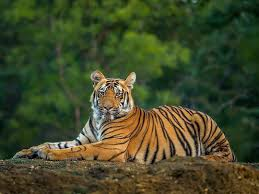
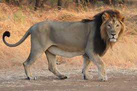
Asiatic Lion (Panthera leo persica): Found only in the Gir Forest of Gujarat, the Asiatic lion is critically endangered but has been successfully conserved. Leopard (Panthera pardus): Widely distributed across India, leopards are known for their adaptability and are often found near human settlements. Snow Leopard (Panthera uncia): Inhabiting the higher reaches of the Himalayas, the snow leopard is an elusive species adapted to cold, mountainous terrains.
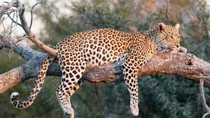
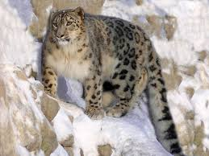
● Elephants :
Indian Elephant (Elephas maximus indicus): Found in forests of the Western Ghats, Northeastern India, and parts of central India. They are key species in maintaining forest ecosystems.
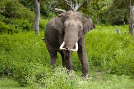
● Rhinos :
Indian Rhinoceros (Rhinoceros unicornis): Known for its single horn, the Indian rhino is predominantly found in Assam's Kaziranga National Park.
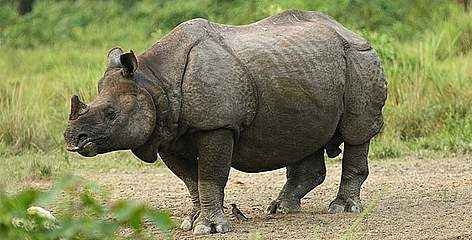
● Other Mammals :
Gaur (Indian Bison), Nilgai (Blue Bull), Chital (Spotted Deer), Sloth Bear, Wild Boar, and Indian Pangolin are other significant species.
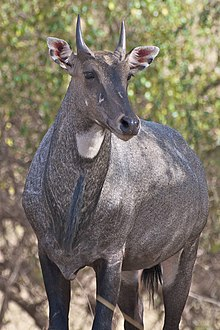
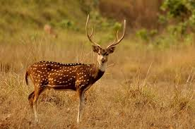
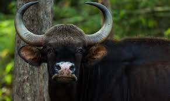
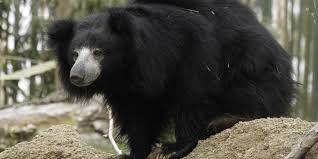
● Endangered Mammals :
Critically endangered mammals include the Lion-tailed Macaque, Dhole (Indian Wild Dog), Red Panda, and the Great Indian Bustard.
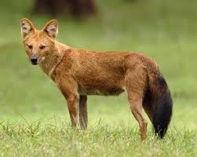
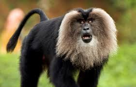
Birds
● Peacock (Indian Peafowl) : The national bird of India, peacocks are commonly
found in forests, open grasslands, and agricultural fields.
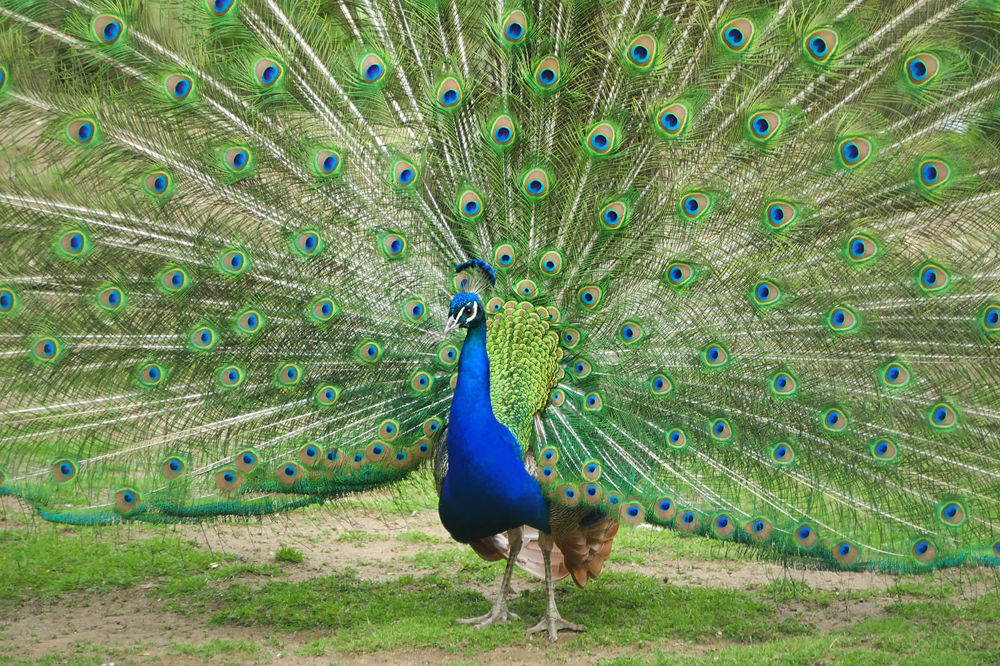
● Great Indian Hornbill : Found in the forests of the Western Ghats and the
Northeast, this bird is recognized for its large casque.
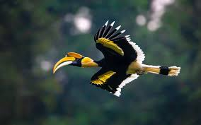
● Sarus Crane : The tallest flying bird in the world, found in wetlands across the
Indian subcontinent.
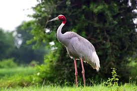
Indian Eagle Owl, Himalayan Monal, Indian Vulture, Greater Flamingo, and Painted Stork are also part of India’s rich avifauna.
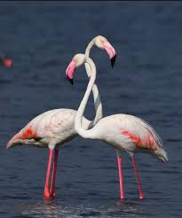
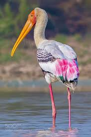
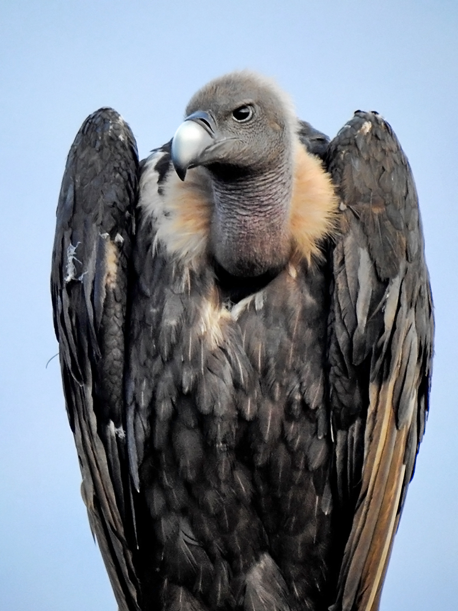
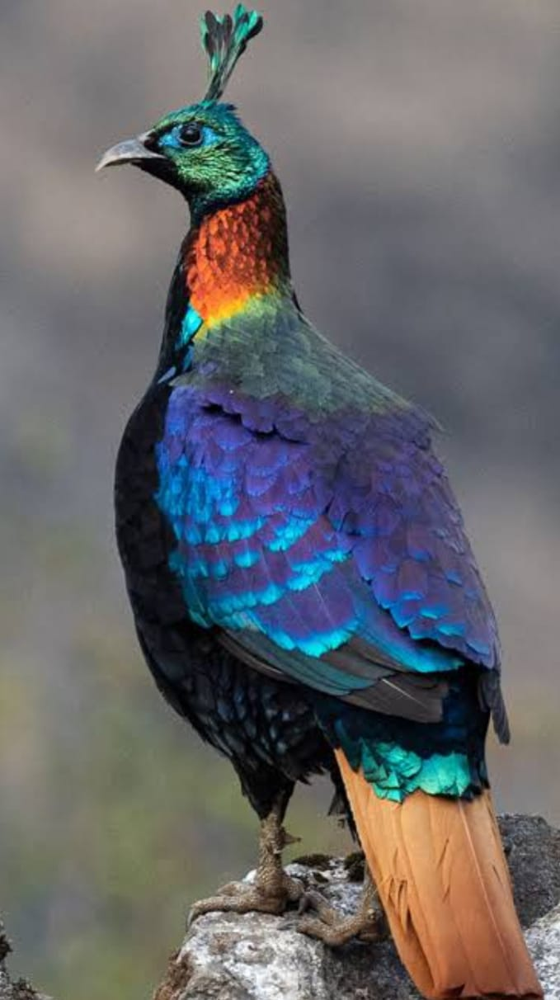
● Migratory Birds : India serves as a key wintering ground for migratory birds like
the Siberian Crane, Bar-headed Goose, and Ruddy Shelduck, which arrive from Central Asia, Siberia, and other regions.
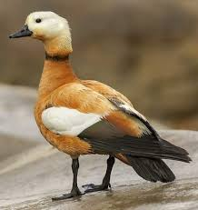
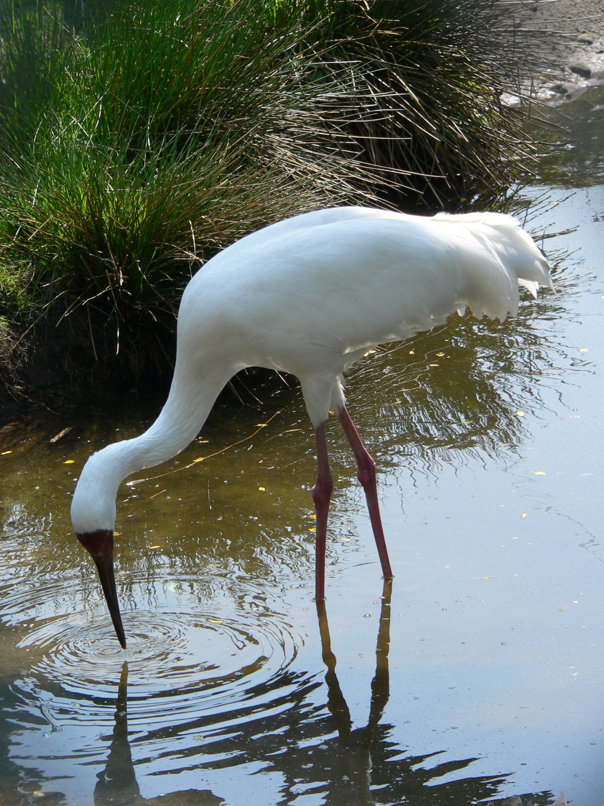
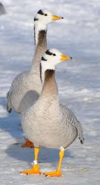
Reptiles
● King Cobra (Ophiophagus hannah) : The world’s longest venomous snake,
the King Cobra is found in the forests of the Western Ghats and Northeast India.
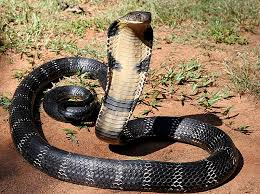
● Indian Python (Python molurus) : A large, non-venomous species that inhabit
various parts of India.
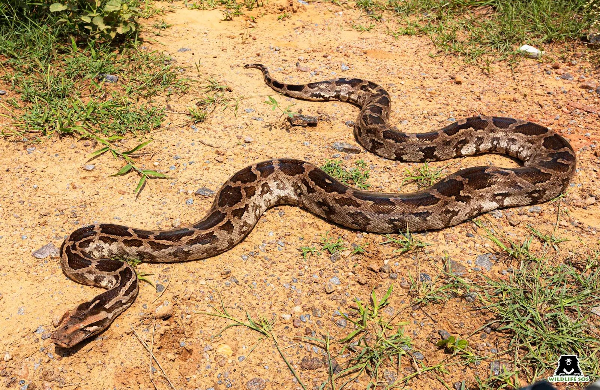
● Crocodiles :
Mugger Crocodile: Found in rivers, lakes, and marshes across India. Gharial: With its distinctive long snout, the gharial is native to the rivers of the northern part of the subcontinent.
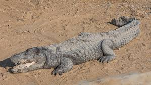
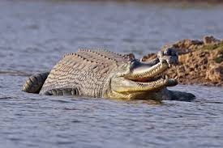
Indian Star Tortoise, Monitor Lizards, Krait, and Russell’s Viper are also significant reptile species.
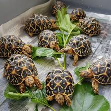
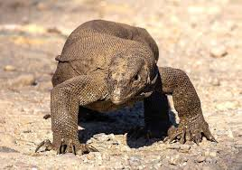
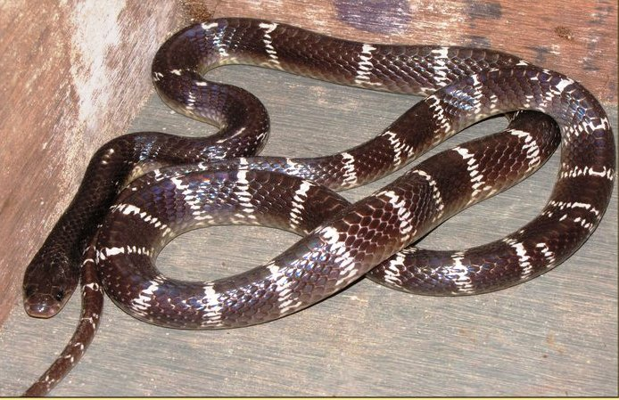
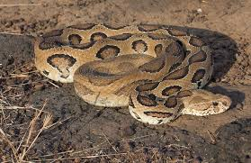
Amphibians and Invertebrates
India is home to a variety of amphibians, especially in the Western Ghats, which hosts over 100 species of frogs, including the Purple Frog, a unique species found only in this region. Invertebrates like butterflies, beetles, spiders, and honeybees contribute significantly to India’s ecological systems.
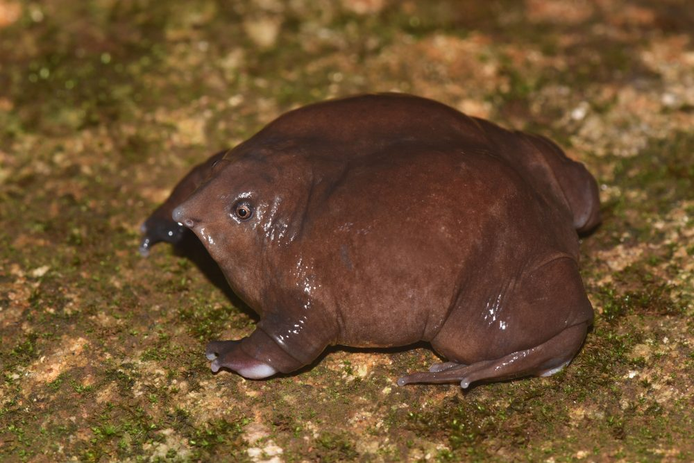
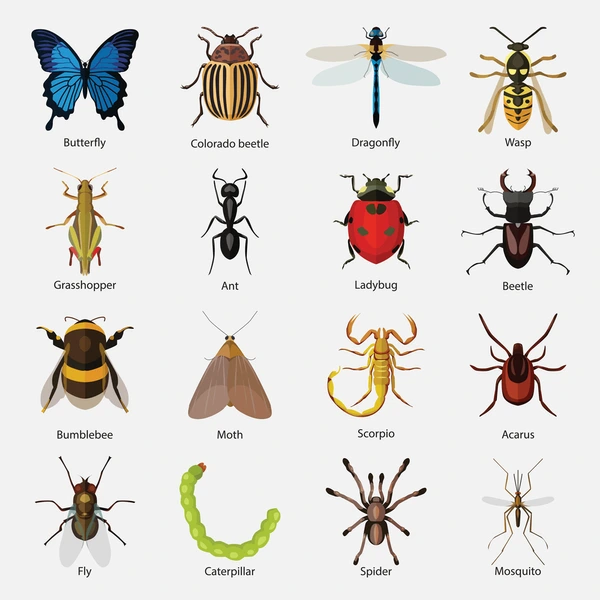
Wildlife Protection Act,1972
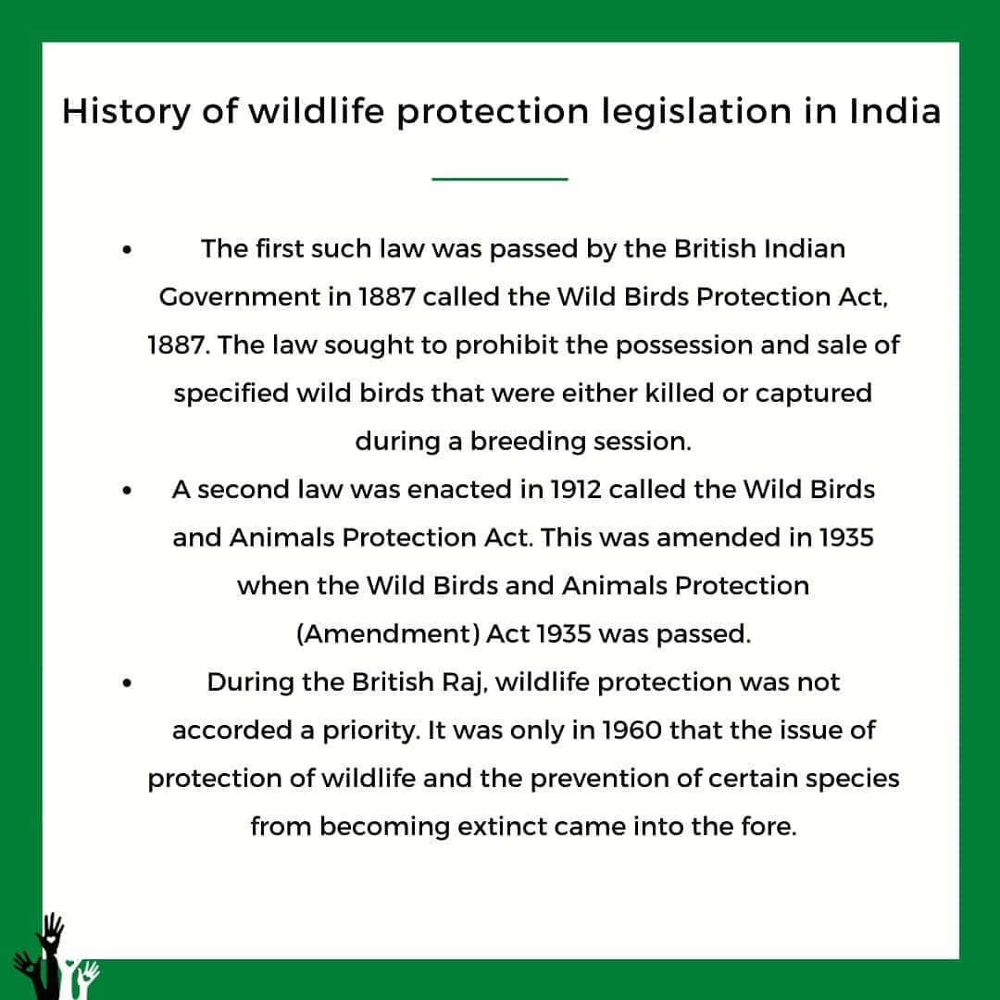

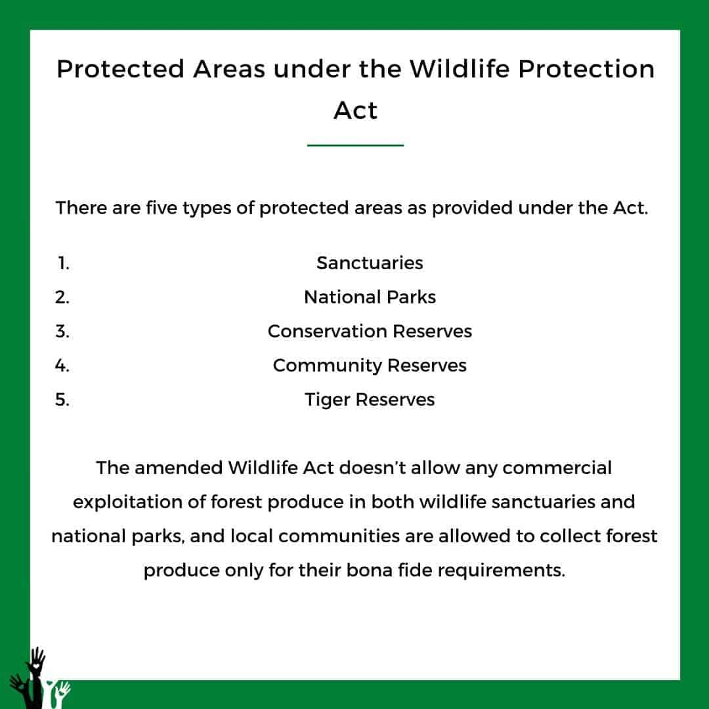
Important Amendments done to the Act
| Wildlife (Protection) Amendment Act of 1991 | This amendment strengthened the penalties and fni es for wildlife-related ofefnces and also introduced provisions for the protection of endangered species. |
|---|---|
| Wildlife (Protection) Amendment Act of 2002 | This amendment introduced the concept of community reserves and conservation reserves as protected areas. |
| Wildlife (Protection) Amendment Act of 2006 | ● This amendment dealt with the issue of human-wildlife confilct and provided for the creation of a National Tiger Conservation Authority (NTCA) to manage and protect tiger reserves. ● It also made provisions for the creation of a Tiger and Other Endangered Species Crime Control Bureau to deal with wildlife-related crimes. |
| Wildlife (Protection) Amendment Act, 2022 | ● The Act seeks to increase the species protected under the law and implement CITES. ● The number of schedules has been reduced to four: ○ Schedule I contains animal species enjoying the highest level of protection. ○ Schedule II for animal species subject to a lesser degree of protection. ○ Schedule III for protected plant species, and ○ Schedule IV for scheduled specimens under CITES. ● The Act permits the use of elephants for 'religious or any other purposes'. ● The penalties have also been increased for general and specially protected animals' violations. |